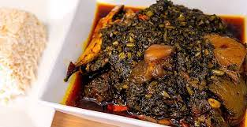

Potatoes Greens

Description:
Liberian Potato Greens Soup is a traditional dish from Liberia, West Africa, renowned for its rich flavors
and hearty ingredients. This sumptuous soup features a vibrant blend of locally sourced sweet potato leaves,
cooked to perfection with aromatic herbs, spices, and a savory broth. Typically prepared with meat such as smoked
fish, chicken, or beef, Liberian Potato Greens Soup offers a satisfying balance of flavors and textures that tantalize
the taste buds. With its nutritious profile and comforting warmth, this beloved dish is not only a staple in Liberian
cuisine but also a cherished culinary experience that celebrates the vibrant culture and heritage of the region.
Ingredients
- palm oil
- potatoes-greens
- pepper
- onion
- meat (optional)
- salt
- maggi
Steps:
-
- Prepare Ingredients:
-
- Gather all the necessary ingredients: sweet potato leaves, smoked fish or meat
(such as chicken or beef), onions, garlic, peppers, oil, dried thyme, bouillon
powder, salt, and pepper.
-
- Clean and Prepare Sweet Potato Leaves:
-
-
Clean the sweet potato leaves, removing any tough stems or blemished leaves.
-
Chop the leaves into bite-sized pieces and set aside.
-
- Prepare Smoked Fish or Meat:
-
-
Clean and cut the smoked fish or meat into smaller pieces, if necessary.
-
- Sauté Aromatics:
-
-
In a pot, heat oil over medium heat.
-
Sauté chopped onions, garlic, and peppers until fragrant and translucent.
-
- Cook Smoked Fish or Meat:
-
-
Add the smoked fish or meat to the pot and cook until browned and flavorful.
-
- Add Sweet Potatoes Leaves:
-
-
Once the meat is cooked, add the chopped sweet potato leaves to the pot.
-
- Season and Simmer:
-
-
Pour enough water or broth into the pot to cover the ingredients.
-
Season the soup with dried thyme, bouillon powder, salt, and pepper to taste.
-
Stir well to combine all ingredients.
-
- Simmer Soup:
-
-
Allow the soup to simmer over medium heat until the sweet potato leaves are tender
and the flavors have melded together, typically for 30-45 minutes.
-
- Adjust Seasoning:
-
-
Taste the soup and adjust the seasoning as needed, adding more salt or spices to taste.
-
- Serve:
-
-
Once the soup is cooked to perfection, serve it hot with your choice of rice.
-
Garnish with fresh herbs or additional peppers for added flavor and visual appeal.
-
- Enjoy:
-
-
Enjoy the comforting and nutritious flavors of Liberian Potato Greens Soup,
celebrating the vibrant culinary heritage of Liberia and West Africa.